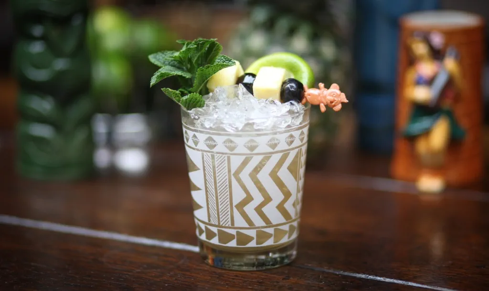

Home
Mai Tai

Trader vics style Mai Tai - the king of Tiki cocktails.
Ingredients
- 60 ml Havana Club Añejo 7 Años Cuban Rum
- 15 ml Ferrand Dry Curaçao liqueur
- 22.5 ml Lime juice (freshly squeezed)
- 10 ml Monin Orgeat syrup
- 7.5 ml Monin Pure Cane sugar syrup (Equivalent to 2 sugar to 1 water simple syrup)